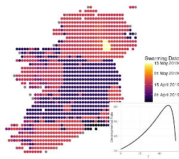

Online Pest Risk Analysis Modelling (OPRAM)
People: Paul Brett, Barry Coonan (Met Éireann), Klara Finkele (Met Éireann), Padraig Flattery (Met Éireann), Deborah Hemming (UK Met Office), Neil Kaye (UK Met Office), Tamara Hochstrasser (UCD) Conor McGee (DAFM), Jon Yearsley (UCD)
Project description
The primary goal of this project is to provide a practical visual tool that communicates scientific evidence to stakeholders involved in Ireland's plant biosecurity policy and pest/pathogen-risk management. This supports the objectives of Ireland's Plant Health and Biosecurity Strategy 2020-2025 (DAFM 2019): "To minimise the threat posed to plants by the potential introduction and establishment of plant pests and diseases".
This project addresses this goal with the following three objectives:
- To review the existing mathematical modelling approaches linking insect plant pest and pathogen outbreaks to the climate
- Develop visual tools that help support risk assessment of plant pests and pathogens, and inform their surveillance under a changing climate
- Develop a network of stakeholders that guides the development of the visualisation tools
The project is divided into the following work-packages:
- Stakeholder Consultation
- Review of available pest-risk modelling approaches
- Development and validation of a pest-risk tool for Ireland
- Development of an online pest-risk tool
Partners

Outreach & Publications
Funding
This work is funded by the Department of Agriculture, Food and Marine (DAFM).